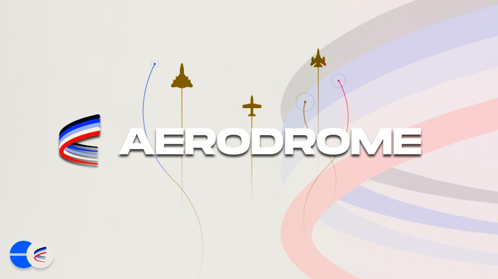

Free AI Website Software
Aerodrome Finance (often called Aerodrome), is a DeFi protocol and decentralized exchange (DEX) built to be a liquidity hub on the Base blockchain—meaning it’s designed to be a main place where people trade tokens and where liquidity providers (LPs) earn fees and incentive rewards.
At a high level, Aerodrome combines familiar DEX ideas (like automated market makers and liquidity pools) with a specific incentive/governance design often described as vote-escrow (“ve”) tokenomics, inspired by earlier DeFi systems (especially Curve’s ve-model) and adapted to Aerodrome’s own “liquidity hub” approach for Base.
1) What problem Aerodrome tries to solve
Most blockchains need “places” where tokens can be exchanged efficiently. A DEX needs liquidity (tokens supplied by LPs), and LPs need a reason to provide liquidity—typically trading fees plus incentives.
On a fast-growing chain like Base, new token pairs and protocols constantly need liquidity. Aerodrome is designed to direct liquidity across the ecosystem, so that trading is easier and less fragmented.
In other words, Aerodrome is not just a basic trading venue; it’s intended to be a central hub that aligns incentives so liquidity shows up where it’s needed.
2) How Aerodrome works as a DEX (core mechanics)
Aerodrome is an AMM-based DEX (automated market maker). The basic function of an AMM is:
Users trade against liquidity pools
LPs deposit token pairs into pools
Trades happen using a pricing formula (AMM math), and LPs generally earn:
trading fees generated by trades in their pool
sometimes additional protocol incentives/emissions
Aerodrome focuses on liquidity strategies that are designed to be efficient for stable + volatile pairs and uses concentrated-liquidity style concepts (in the broader ecosystem comparisons it’s often described alongside Uniswap v3 / Velodrome-style patterns).
So if you’ve heard of “LPing,” “pools,” “fees,” and “concentrated liquidity,” those are the building blocks behind using Aerodrome.
3) The “ve(3,3)” / vote-escrow governance model (why incentives get directed)
A key differentiator is Aerodrome’s incentive design.
A) Lock AERO to get veAERO
Aerodrome uses a system where users can lock AERO to receive veAERO. (coinmarketcap.com)
B) veAERO holders vote on where emissions go
Holders of veAERO can vote weekly to direct new AERO emissions to specific liquidity pools. (coinmarketcap.com)
This is important because it means liquidity incentives aren’t simply “distributed randomly” or only based on who deposited first. Instead, the system tries to connect incentives to governance decisions by ve token holders.
C) Fees and emissions alignment
A common description of the model is:
voters help decide which pools get emissions
voters then receive a large share of the protocol’s relevant fee flow from the previous week (described in ecosystem summaries) (coinmarketcap.com)
Conceptually, Aerodrome tries to keep liquidity “aligned” with community decisions.
4) “Gauges,” incentives, and bribes (ecosystem alignment)
In ve-style DeFi, pools that receive incentives are often organized into gauges. Aerodrome’s site and ecosystem explanations commonly describe mechanisms like:
gauges
bribes
emissions
and a broader “vote-escrow” alignment framework (aerodromefinance.to)
Bribes (in many DeFi systems) are an additional way for protocols or teams to attract incentives by rewarding voters for supporting their pool. While the exact implementation details matter, the general idea is: the market and ecosystem can “bid” for where liquidity incentives flow.
5) What role the AERO token plays
Aerodrome has an associated token called AERO. In most descriptions:
AERO is the token you lock to obtain veAERO
AERO emissions are directed to pools via the veAERO voting process (coinmarketcap.com)
So AERO is not just a “meme token” or passive asset—its primary value proposition in the system is tightly connected to governance/incentives for liquidity.
6) Who uses Aerodrome?
Different people use Aerodrome for different reasons:
Traders
Swap tokens
Seek good prices and execution on Base
Liquidity providers (LPs)
Deposit into pools
Earn trading fees
Potentially earn emissions/incentives (depending on pool and gauge design) (aerodromefinance.to)
Governance / ve participants
Lock AERO
Vote on which pools receive emissions (coinmarketcap.com)
This is why Aerodrome is often described as a “liquidity hub”: it tries to coordinate those roles into one system.
7) Risks to understand (important for any DeFi protocol)
Even if a DEX is popular, it is still smart-contract based and carries risks, such as:
Smart contract vulnerabilities (bugs/exploits)
Impermanent loss / price risk for LPs (depends on pool type)
Liquidity/incentive changes (emissions and bribes/gauges can change over time)
Token volatility (AERO price can move significantly)
Operational/market risk in governance (voting can shift liquidity incentives)
Aerodrome-specific educational overviews typically emphasize that DeFi isn’t risk-free, and that contract risk applies to all protocols of this type. (aeordorme.finance)
8) A simple mental model
If you want a “one sentence” understanding:
Aerodrome Finance is a Base-based DEX/AMM that attracts liquidity by combining LP fee earnings with a ve-style system where AERO holders vote on where emissions go.
Free AI Website Software